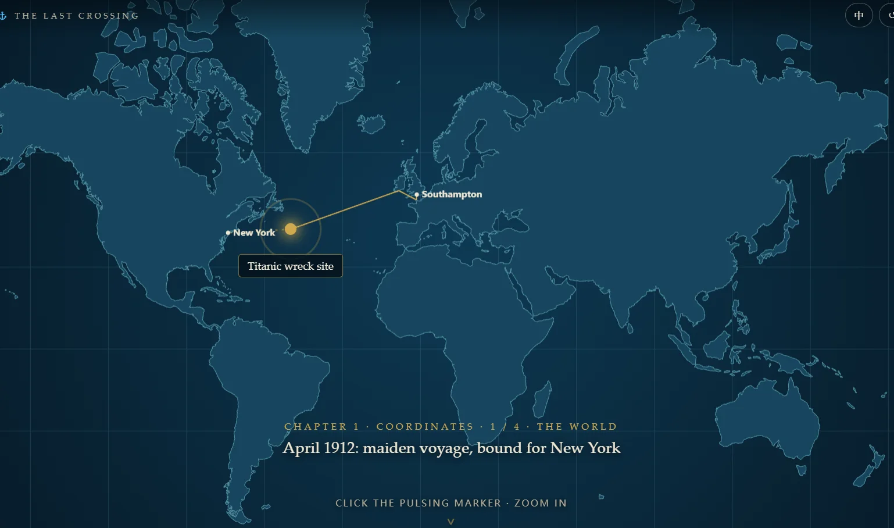
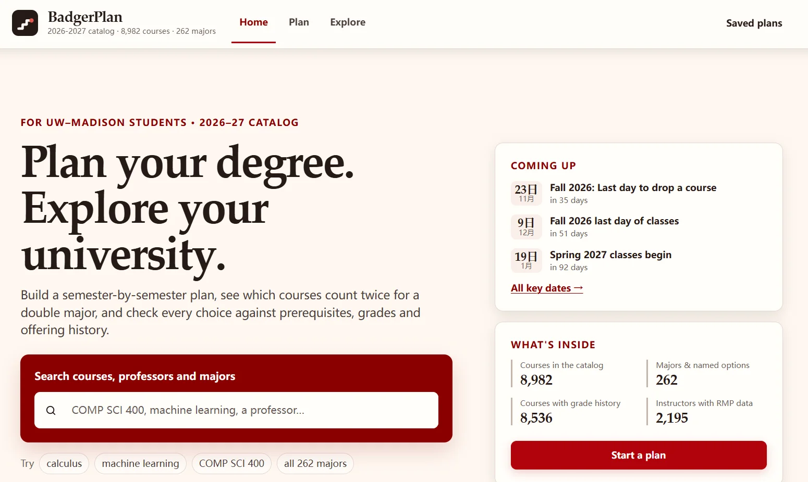
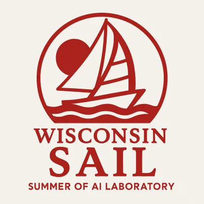
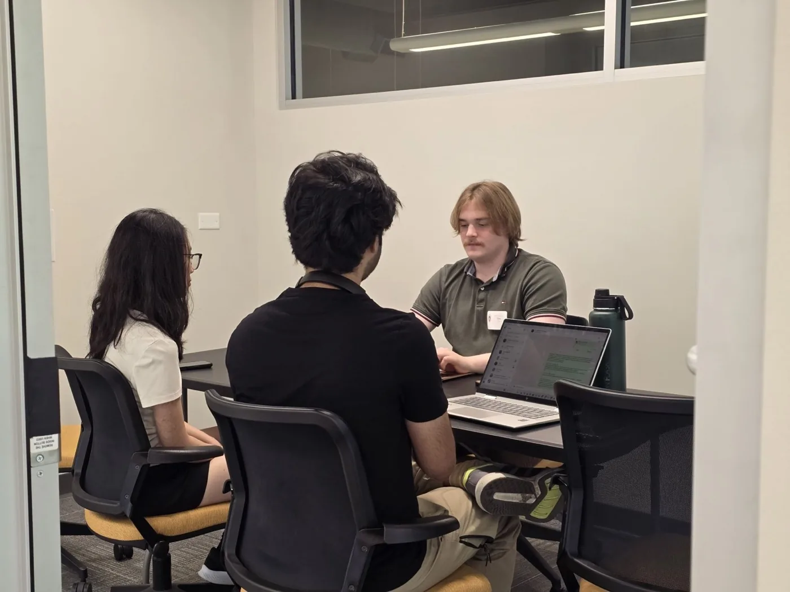
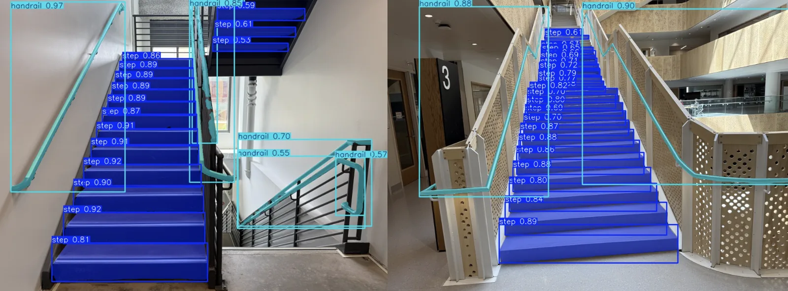

Projects
Research, systems, and hackathon work. Source and write-ups are linked where public.
Titanic Time Travel
2026 · Solo project
The Last Crossing · interactive web experience

An immersive, scrolling web experience about the Titanic wreck: zoom in on an interactive map, descend with a diver to the wreck at 3,840 m, explore it, then step into a passenger’s life. Bilingual (English / 简体中文).
JavaScript · Interactive storytelling · Scroll-driven animation · Bilingual UI · Vercel
[Demo]
BadgerPlan
2026 · Independent project
Academic planning for UW–Madison students

A degree-planning web app that builds semester-by-semester plans, checks requirements (DARS-style), compares double majors, and lets students explore courses, professors, and majors using historical grade and offering data.
- Drag-and-drop plan editor that validates prerequisites, offering season, and credit load on every move.
- Searchable catalog of about 8,982 courses and 262 majors, with grade history and offering frequency.
- Next-term weekly schedule, key dates exportable as .ics, campus map, transcript import (processed in the browser), and JSON save / import.
Web app · Data exploration · Constraint checking · Madgrades data · Render
[Demo]
SignBridge
Summer 2026 · Team lead
SAIL · ASL-to-Speech System

Led a four-member team building SignBridge, a web-based ASL-to-speech system that tracks 543 hand, face, and pose landmarks per frame across a 2,044-sign-class recognition pipeline, from live signing to spoken language.
- Real-time tracking of 543 hand, face, and pose landmarks per frame across a 2,044-sign-class recognition pipeline.
- Integrated temporal tracking, Transformer-based recognition, Gemini 2.5 language refinement, and text-to-speech into one pipeline.
- Achieved 11.59 ms average local processing latency toward a 30 FPS real-time target.
- Led a four-member team through system design, delegation, and end-to-end integration.
Python · Transformers · MediaPipe · Gemini 2.5 · Text-to-Speech · Real-Time Systems
[Demo] / [Code]
Virtual Sensor-Guided Noise Diagnosis ASME competition winner
May 2026 – Present · Researcher
Self-Correction Framework
Developed a residual-based framework that diagnoses and self-corrects sensor faults, integrating fault injection, 10-class sensor fault diagnosis, severity estimation, and signal correction — winner of the ASME Undergraduate Engineering Student Competition.
- Injected controlled sensor faults (noise, bias, drift, and more) into virtual-sensor inputs to study fault propagation.
- Trained a 10-class XGBoost fault-diagnosis classifier, reaching 98.74% classification accuracy and 98.56% macro F1.
- Built severity estimation and signal-correction stages that reduced error by over 90% in representative bias and drift correction cases.
- Presented the framework at the ASME Undergraduate Engineering Student Competition with faculty advisor Saurabh K. Gupta.
Python · XGBoost · PyTorch · Signal Processing · Fault Diagnosis · Virtual Sensing
[Paper] / [Slides]
Multi-Parameter Virtual Sensing
Oct 2025 – Feb 2026 · Researcher
Automotive Engine ANN

Designed and developed a multi-target virtual sensing framework using a single artificial neural network (ANN) to replace multiple expensive physical sensors in a 12L 6-cylinder diesel engine.
- Engineered multi-output ANN architectures (ANN-6 and ANN-13) in PyTorch for non-linear thermodynamic engine states.
- Preprocessed and analyzed real-world high-fidelity experimental data across full engine load and speed ranges.
- Achieved predictive R² scores of 0.9945 for intake air mass flow, 0.9891 for NOx emissions, and 0.9841 for start of combustion.
- Validated model generalization using stratified splits against Linear Regression, Random Forest, and SVR baselines.
Python · PyTorch · NumPy · Pandas · Scikit-learn · Virtual Sensing · Deep Learning · Thermodynamics
[Code]
Industrial Asset Intelligence
July 2026 · Participant
Spatial Intelligence Ideathon

Designed a spatial computing solution for industrial manufacturing environments during a one-day interdisciplinary startup ideathon, preserving equipment maintenance knowledge and reducing downtime.
- Formulated product strategy and technical architecture for shared AR spaces in manufacturing environments.
- Conducted rapid customer discovery and developed sustainable B2B SaaS business models.
- Led pitch deck creation and high-fidelity product dashboard demonstrations.
- Designed spatial anchoring logic to ground equipment documentation to physical machinery.
Spatial Computing · Shared AR · Digital Twins · Indoor Positioning · AI Knowledge Management
AR/VR Accessibility & Spatial HCI
Apr 2026 – Sep 2026 · Researcher

Research project focusing on accessibility in immersive environments, utilizing depth-sensing cameras and spatial computing to assist low-vision users with real-world navigation.
- Leveraged Intel RealSense D455 depth data to map physical obstacles and estimate distances in real time.
- Formulated 3D spatial audio feedback models to communicate navigation markers and hazard warnings.
- Integrated gesture-based control paths to simplify VR interface navigation for accessibility.
Unity · Meta Quest SDK · C# · Intel RealSense API · Spatial Computing · HCI
Self-Improving Background Editor
Spring 2026 · Ongoing
Closed-Loop Image Editing

Built a closed-loop image editor that replaces the background behind a person or dog while keeping the subject intact: every candidate is scored by a bank of critics, diagnosed, and re-edited.
- Implemented local cross-attention control to isolate edits without affecting background pixels.
- Formulated a closed-loop feedback pipeline that scores and refines image details iteratively.
- Optimized diffusion step sequencing, reducing inference times for image-to-image tasks.
Python · PyTorch · Hugging Face Diffusers · Generative AI · Computer Vision
[Code]
Human Survival Probability Analysis
Fall 2025
Conducted a statistical and machine learning study analyzing socioeconomic factors and their correlations with human survival outcomes across ten large-scale datasets.
- Processed and merged ten heterogeneous datasets, handling class imbalances and multi-collinearity.
- Trained and optimized multi-layer ANN classifiers in Python.
- Produced publication-ready statistical visualizations of feature importances and correlation matrices.
Python · Pandas · NumPy · Seaborn · Matplotlib · Artificial Neural Networks (ANNs)